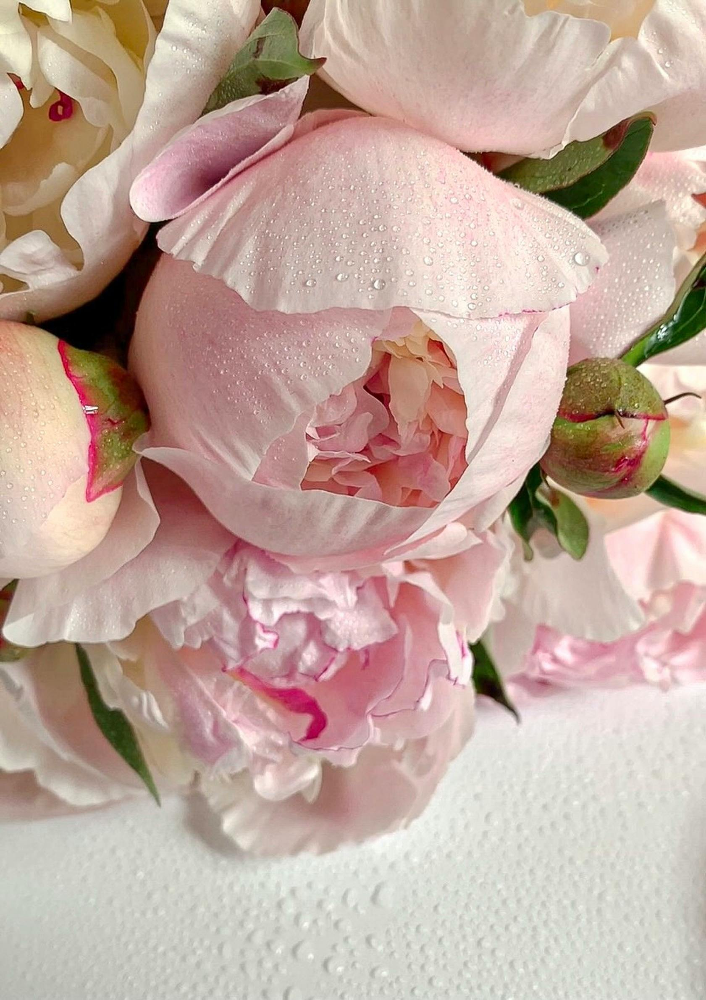

Encuentra tu aroma ideal
Creemos que un aroma es mucho más que una fragancia: es una extensión de tu personalidad, un recuerdo que queda en la memoria de quienes te rodean y una manera de expresar quién eres sin necesidad de palabras. Elegir el perfume correcto no solo se trata de oler bien, sino de encontrar una esencia que hable por ti.
Por eso, hemos creado esta guía para ayudarte a descubrir qué aromas se adaptan mejor a tu estilo de vida, tus gustos y tu esencia única.
Fresco y natural
Si eres una persona activa, alegre y con una energía contagiosa, lo tuyo son las fragancias frescas y cítricas. Notas como limón, bergamota, mandarina o hierbas verdes transmiten vitalidad y espontaneidad. Son perfectas para quienes disfrutan de planes al aire libre, mañanas soleadas y esa sensación de ligereza que hace sentir libertad.
Ideal para: personalidades optimistas, libres y amantes de lo sencillo.
Romántico y dulce
Si te defines como alguien sensible, detallista y con un toque soñador, las fragancias florales y frutales son para ti. Aromas con jazmín, rosa, peonía, frutos rojos o vainilla despiertan ternura y encanto. Son perfectos para momentos especiales, citas y para quienes disfrutan expresar calidez y dulzura en su día a día.
Ideal para: personalidades amables, creativas y con un corazón lleno de emociones.

Apasionado y atrevido
Si amas destacar, tomar riesgos y dejar huella a donde vayas, las fragancias intensas y especiadas son tus aliadas. Notas como pimienta, canela, ámbar, madera de cedro o cuero transmiten fuerza, sensualidad y carácter. Son perfectas para las noches, eventos importantes o para esas personas que buscan ser inolvidables.
Ideal para: personalidades seguras, fuertes y con un espíritu valiente.
Elegante y sofisticado
Si te atrae la distinción, la calma y los detalles finos, los aromas orientales, almizclados o con notas de incienso, sándalo y pachulí serán tus mejores compañeros. Estas fragancias transmiten clase, madurez y un estilo atemporal que nunca pasa de moda.
Ideal para: personalidades tranquilas, firmes y con un gusto refinado.
Cada fragancia tiene una historia, y al elegirla, eliges también cómo quieres ser recordado. ¿Prefieres transmitir frescura, dulzura, pasión o elegancia? Sea cual sea tu estilo, en Ely Perfumes encontrarás un aroma que hable de ti y te acompañe en cada momento especial.
Da el siguiente paso: explora nuestros catálogos y encuentra esa esencia que convertirá tu presencia en un recuerdo inolvidable.
VER CATÁLOGOS